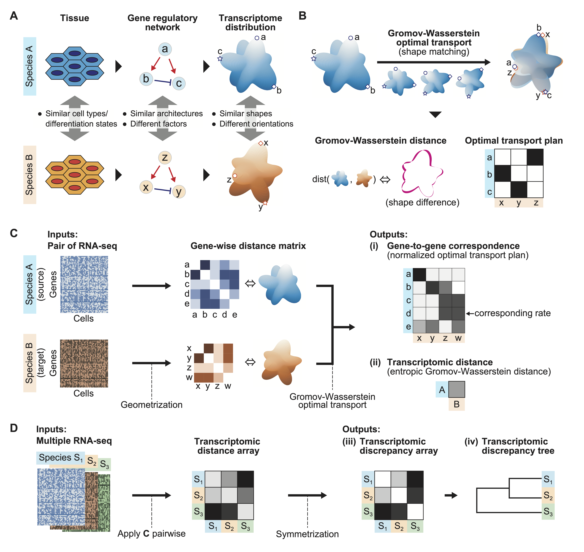

Species-OT documentation

Geometric inference of cross-species transcriptome correspondence using Gromov–Wasserstein optimal transport． GitHub project is here： yuyatokuta/Species-OT．
Tutorials

Geometric inference of cross-species transcriptome correspondence using Gromov–Wasserstein optimal transport． GitHub project is here： yuyatokuta/Species-OT．
Tutorials